Descrição:
Olá, pessoal!
Meu nome é Ana Julia e estou vivendo um dos momentos mais
emocionantes da minha vida. Desde pequena, sempre sonhei com o
dia em que completaria 15 anos — e agora, esse sonho está
prestes a se tornar realidade! 💕✨
Faltam apenas alguns dias para a minha tão esperada festa, e não
consigo esconder a alegria que transborda no meu coração. Sinto
um friozinho na barriga só de imaginar cada detalhe desse dia
especial. Tudo está sendo preparado com muito amor e dedicação,
porque mais do que uma comemoração, essa festa representa um
marco inesquecível na minha história.
Completar 15 anos é um símbolo de crescimento, de transformação
e de novos horizontes. É o momento em que deixo para trás a
infância com gratidão e dou os primeiros passos rumo à juventude
com esperança, coragem e brilho nos olhos. 🌸
A expectativa é grande, os sonhos são muitos e a emoção é
indescritível. Estou cercada por pessoas que amo, que torcem por
mim e que fazem parte da minha caminhada até aqui. Quero que
cada sorriso, cada abraço e cada instante vivido nessa data se
torne uma lembrança eterna no meu coração.
Sou grata por tudo o que vivi até agora e ainda mais animada com
tudo o que está por vir. Essa é uma fase linda, cheia de
descobertas, aprendizados e novas possibilidades — e eu estou
pronta para viver tudo isso com intensidade, alegria e amor.
Obrigada por fazerem parte desse momento tão especial!
💖
Com carinho,
Ana Julia
 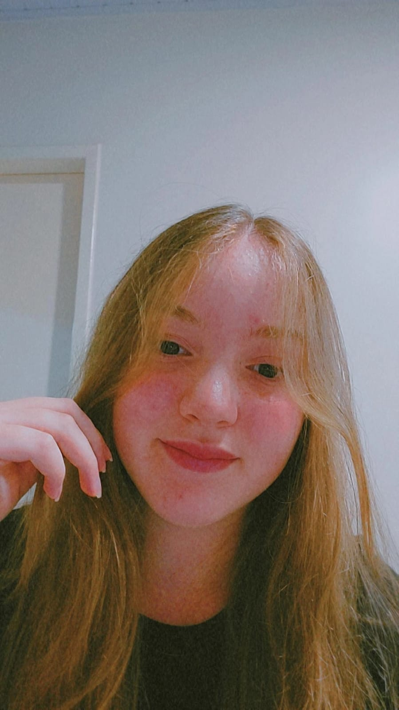
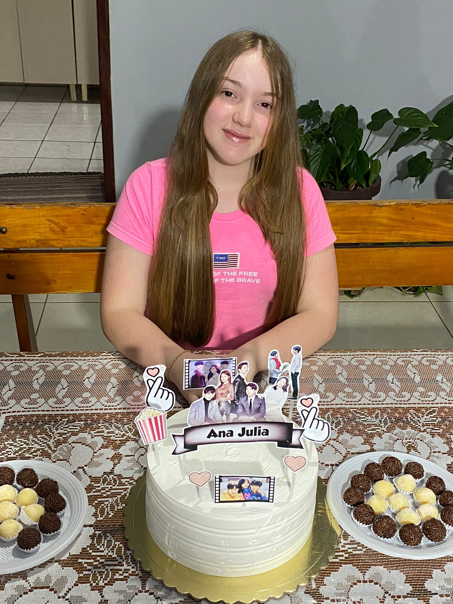
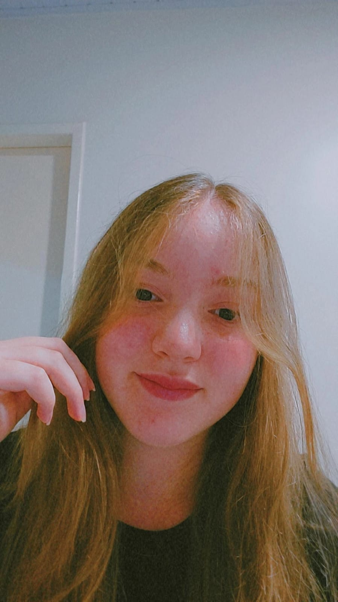
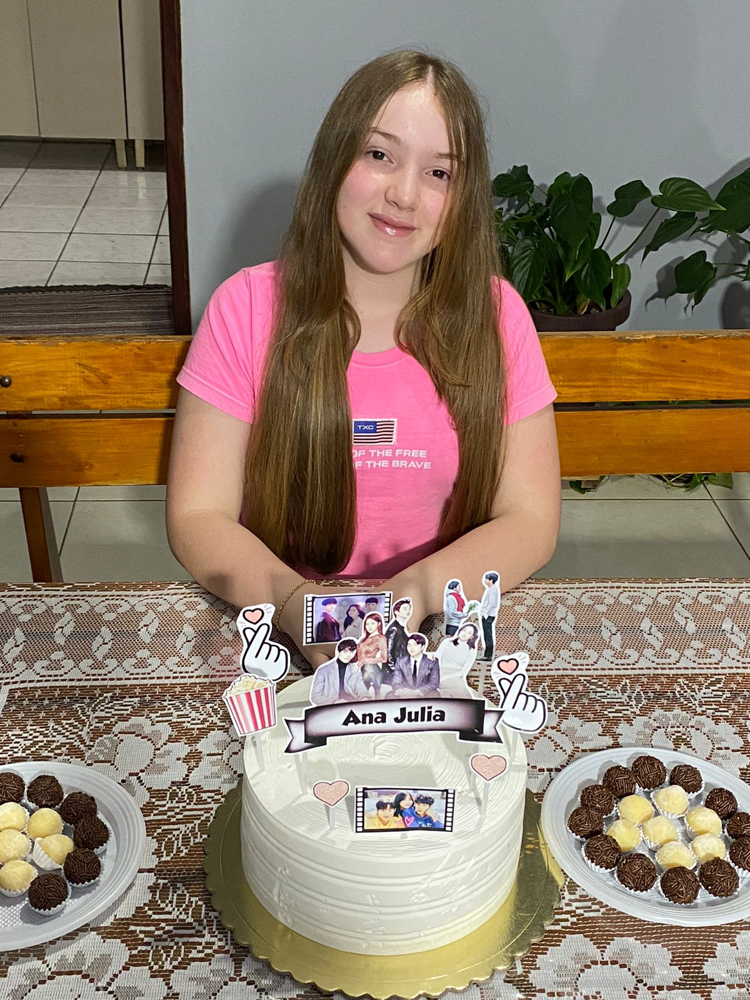
 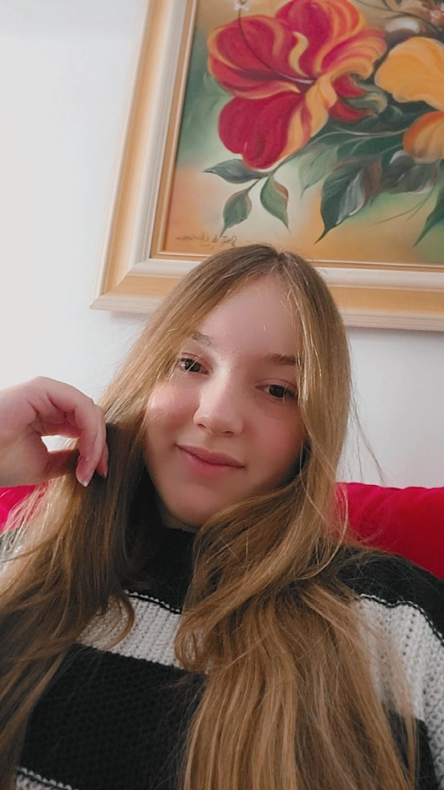
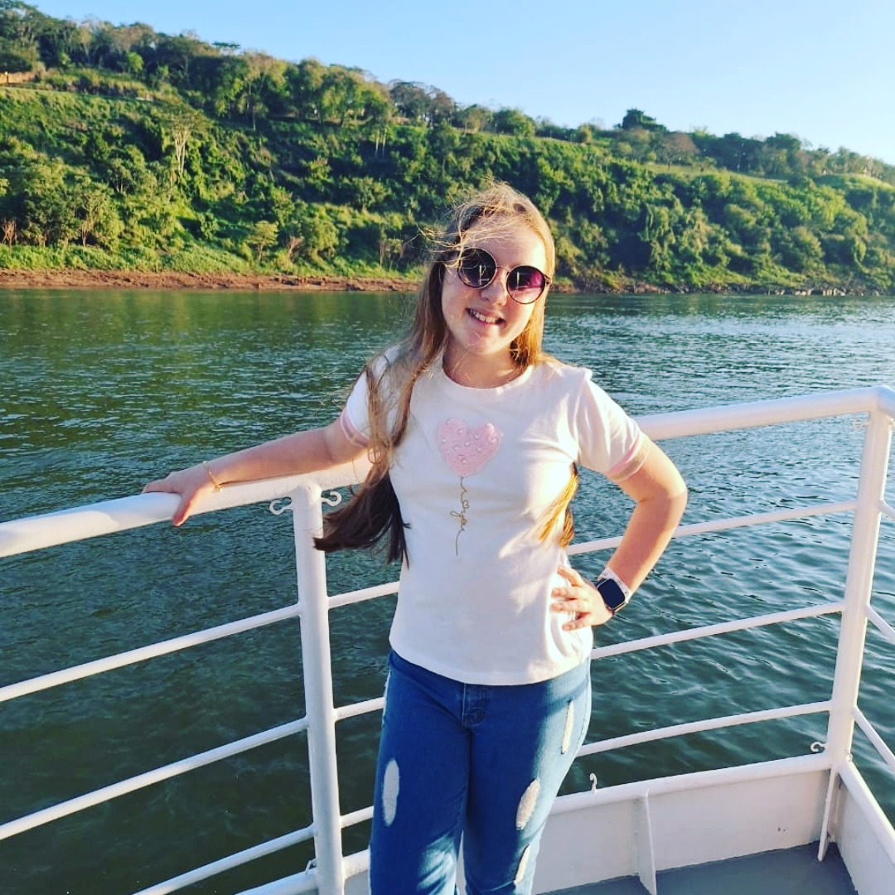
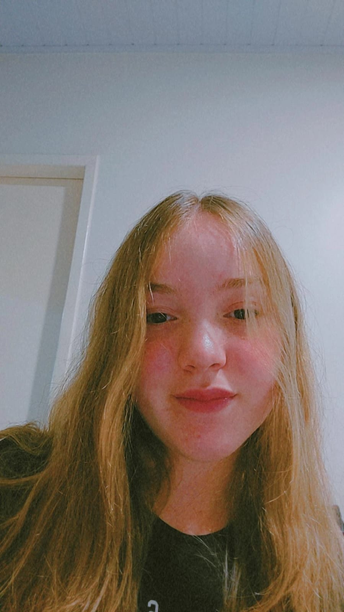
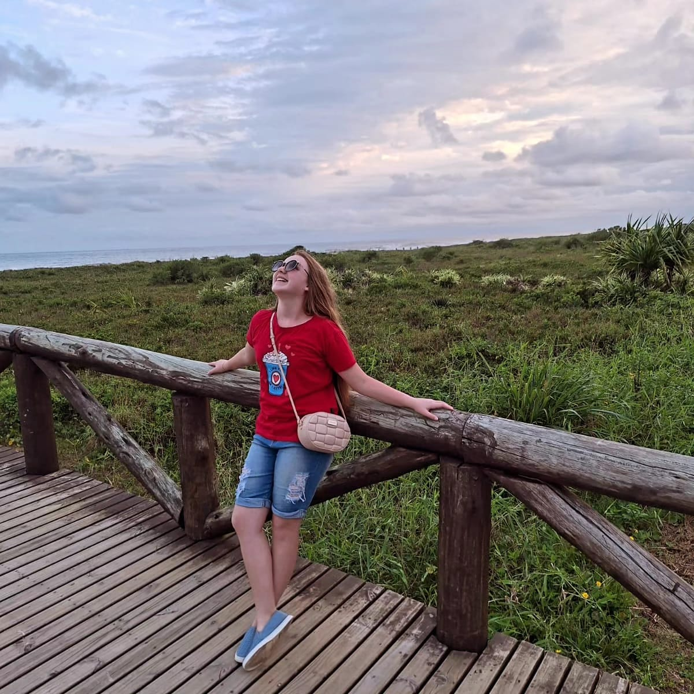
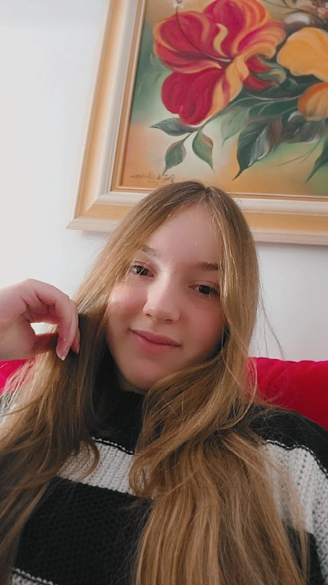
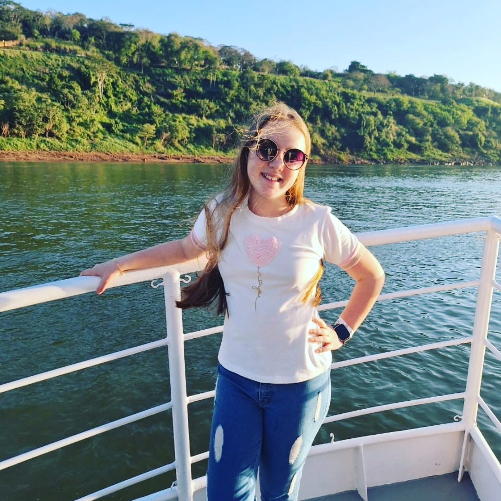
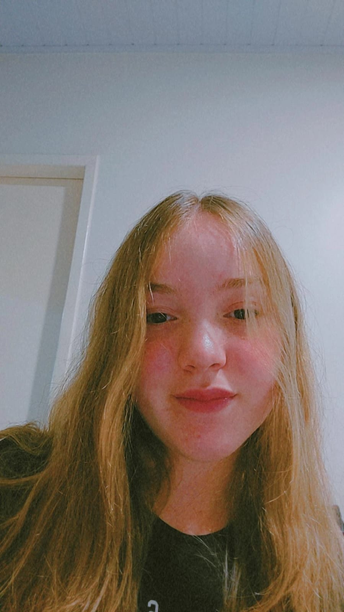
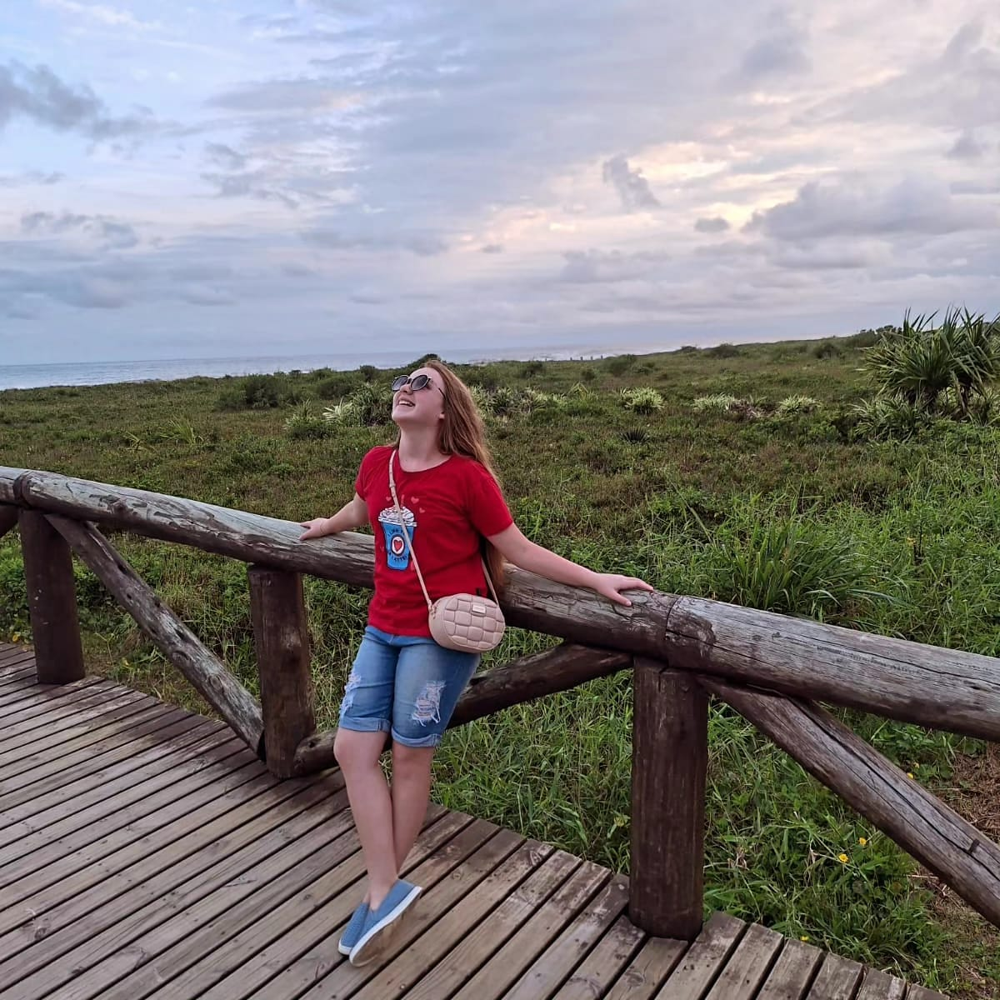